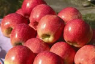
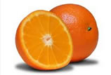
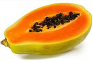

Tanto o link como o botão quando clicados revelam e escondem o conteúdo
Maçã (link) A maçã é o fruto pomáceo da macieira, árvore da família Rosaceae. É um dos frutos de árvore mais cultivados, e o mais conhecido dos muitos membros do género Malus que são usados pelos seres humanos. As maçãs crescem em pequenas árvores, de folha caducifólia que florescem na Primavera e produzem fruto no Outono. A árvore é originária da Ásia Ocidental, onde o seu ancestral selvagem, Malus sieversii, ainda é encontrado atualmente. As maçãs têm sido cultivadas há milhares de anos na Ásia e Europa, tendo sido trazidas para a América do Norte pelos colonizadores europeus. As maçãs têm estado presentes na mitologia e religiões de muitas culturas, incluindo as tradições nórdica, grega e cristã. Em 2010, o genoma da fruta foi descodificado, levando a uma nova compreensão no controle de doenças e na reprodução seletiva durante a produção da maçã.
Fonte: WikipediaA laranja é o fruto produzido pela laranjeira (Citrus × sinensis), uma árvore da família Rutaceae. A laranja é um fruto híbrido, criado na antiguidade a partir do cruzamento da cimboa com a tangerina. O sabor da laranja varia do doce ao levemente ácido. Frequentemente, esta fruta é descascada e comida ao natural, ou espremida para obter sumo. As pevides (pequenos caroços duros) são habitualmente removidas, embora possam ser usadas em algumas receitas. A casca exterior pode ser usada também em diversos pratos culinários, como ornamento, ou mesmo para dar algum sabor. A camada branca entre a casca e as gomas, de dimensão variável, raramente é utilizada, apesar de ter um sabor levemente doce. É recomendada para "quebrar" o sabor ácido da laranja na boca, após terminar de consumir o fruto.
Fonte: WikipediaMamão, papaia ou ababaia é o fruto do mamoeiro ou papaeira, árvores das espécies do gênero Carica, especialmente de Carica papaya. Em Angola utilizam-se os termos mamão / mamoeiro para identificar o fruto mais arredondado, identificando papaia / papaeira com o fruto mais alongado e mais adocicado. São bagas ovaladas, com casca macia e amarela ou esverdeada. A sua polpa é de uma cor laranja forte, doce e macia. Há uma cavidade central preenchida com sementes negras e rugosas, envolvidas por um arilo transparente.
Mamões são consumidos in natura, em saladas e sucos. Antes da maturação, sua casca apresenta um látex leitoso que deve ser retirado antes do consumo. Este látex contém substâncias nocivas às mucosas, sendo usado, inclusive, culinariamente, como amaciante de carnes. Tem um alto teor de papaína, uma enzima proteolítica, que é usada em medicamentos para tratamento de distúrbios gastrointestinais e para reabsorção de hematomas.
Originalmente do sul do México e países vizinhos, é atualmente cultivada na maioria dos países tropicais e nos Estados Unidos, onde foi introduzido primeiramente na Flórida, Havaí, Porto Rico, e nas Ilhas Virgens.
Fonte: WikipediaA maçã é o fruto pomáceo da macieira, árvore da família Rosaceae. É um dos frutos de árvore mais cultivados, e o mais conhecido dos muitos membros do género Malus que são usados pelos seres humanos. As maçãs crescem em pequenas árvores, de folha caducifólia que florescem na Primavera e produzem fruto no Outono. A árvore é originária da Ásia Ocidental, onde o seu ancestral selvagem, Malus sieversii, ainda é encontrado atualmente. As maçãs têm sido cultivadas há milhares de anos na Ásia e Europa, tendo sido trazidas para a América do Norte pelos colonizadores europeus. As maçãs têm estado presentes na mitologia e religiões de muitas culturas, incluindo as tradições nórdica, grega e cristã. Em 2010, o genoma da fruta foi descodificado, levando a uma nova compreensão no controle de doenças e na reprodução seletiva durante a produção da maçã.
Fonte: WikipediaTemas gratuitos por: Bootswatch